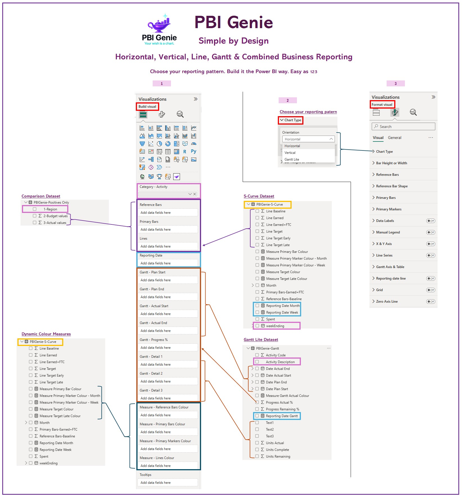
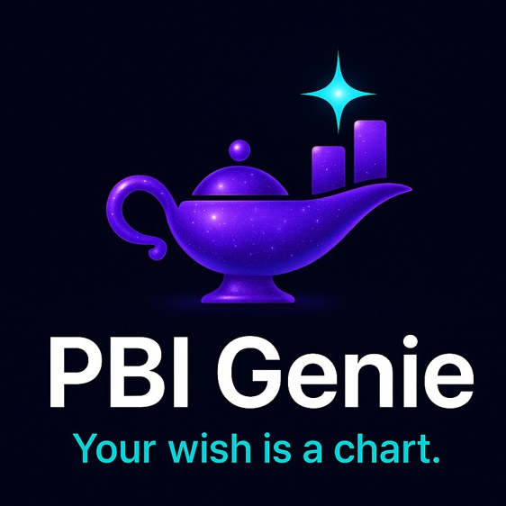
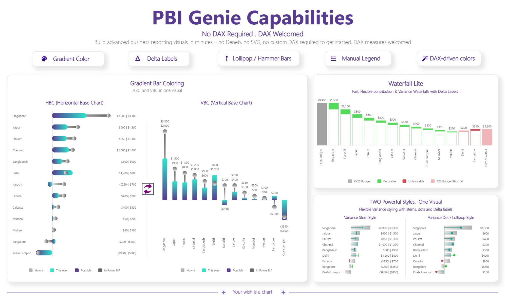
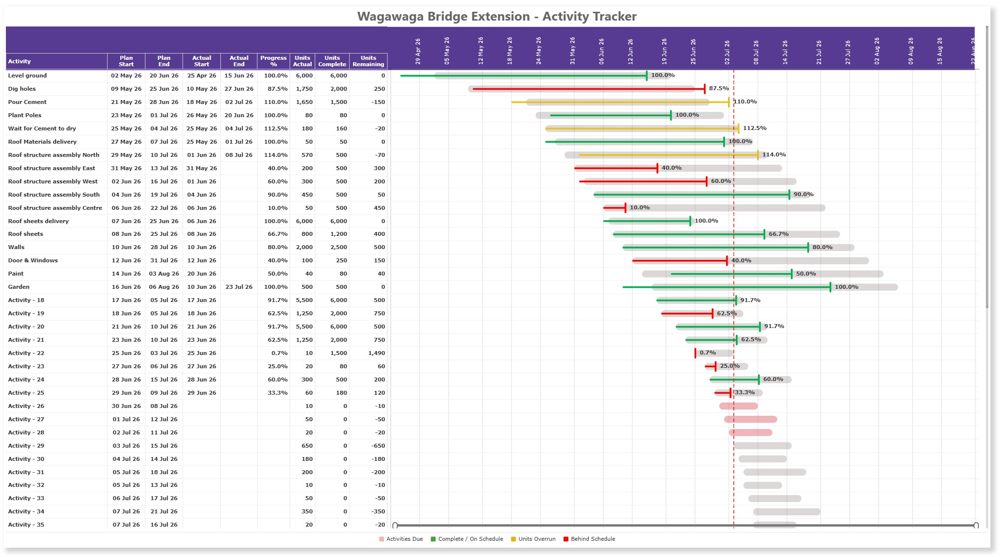
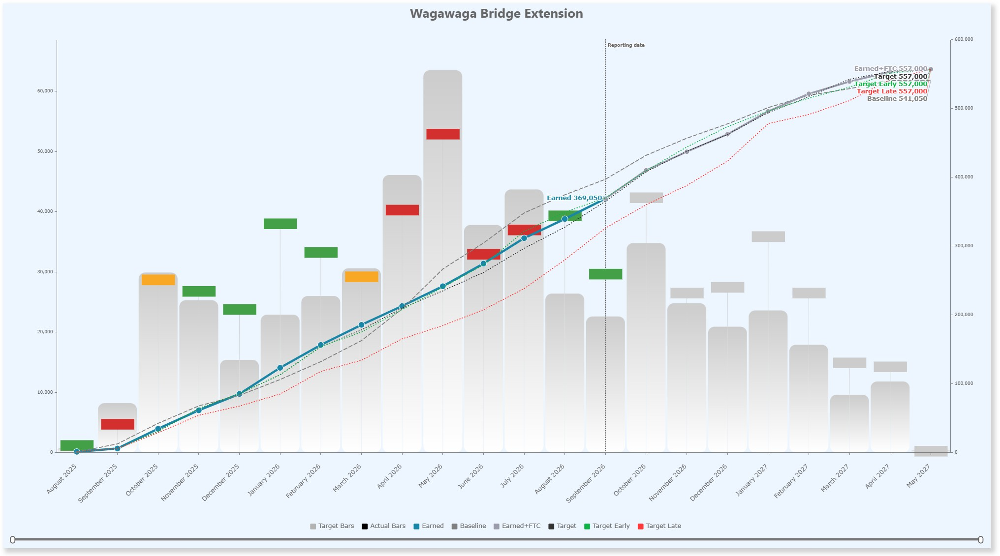
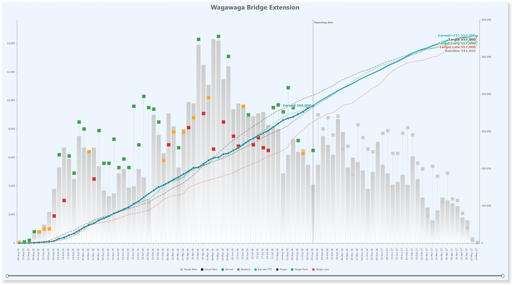
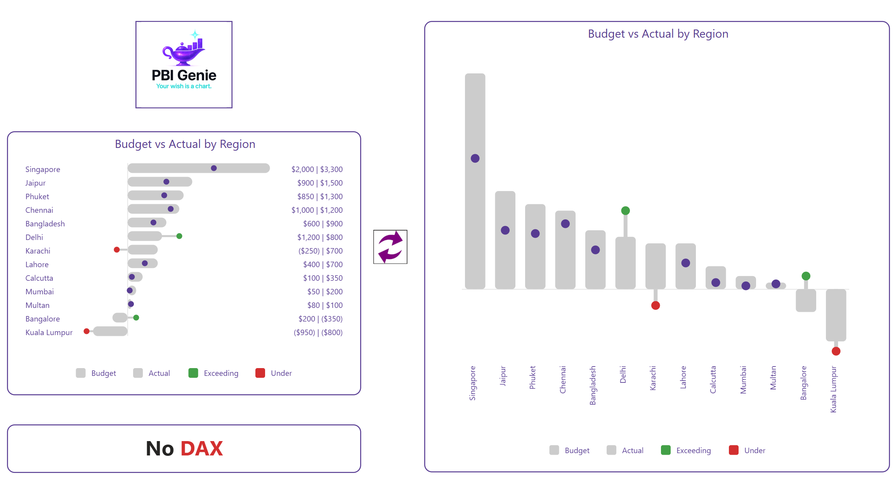

Simple by Design
Choose the reporting pattern, use familiar Build and Format panes, and build advanced visuals the Power BI way.
Modern Power BI Visuals
Your wish is a chart.

PBIGenie develops modern certified Power BI visuals designed to help creators build polished, flexible, and presentation-ready reports without wrestling every chart into shape.
No DAX, no Deneb, no SVG, and no custom JSON required. DAX welcomed. PBIGenie is simple enough for everyday report builders, but flexible enough for advanced Power BI users who want more control.
Explore how PBIGenie turns advanced business reporting patterns into familiar Power BI workflows—from one simple Build experience through to executive-ready comparison charts, Gantt reporting, and S-Curves.

Choose the reporting pattern, use familiar Build and Format panes, and build advanced visuals the Power BI way.

Build horizontal, vertical, gradient, lollipop, hammerhead, delta, and advanced comparison visuals in one certified visual.

Compare Planned and Actual dates, show progress, and create clear project-controls reporting directly inside Power BI.

Combine monthly performance bars with cumulative earned, baseline, and forecast lines for executive reporting.

Use the same reporting pattern at a more detailed weekly level for operational project-controls analysis.

Build polished horizontal and vertical comparisons with overlap bars, labels, legends, rounded styling, and performance colours.
Move between horizontal and vertical layouts while keeping the visual clean, flexible, and familiar.
Compare reference and primary values for budget, target, actual, variance, and performance reporting.
Extend comparison reporting into cumulative line charts, executive S-Curves, and practical planned-versus-actual timelines.
Control colours, labels, legends, markers, gradients, grids, and layout details directly through familiar Power BI controls.
PBI Genie Pty Ltd builds modern certified Power BI visuals for report creators, consultants, analysts, planners, and business teams who want better reporting options inside Power BI.
We focus on innovation where it matters most—the charting layer of Power BI—helping users tell clearer, sharper, and more useful stories with data.
"Your wish is a chart."
Email us at support@pbigenie.com
Read our Privacy Policy.
Read our Support Policy.
Read our Terms of Use Policy.
Read our Help / Docs Notes.